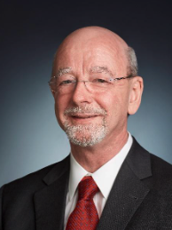

Board of Directors
Independent & Rigorous Oversight
Hugh Flynn - Non Executive Chairman

Hugh is a director of ASL Aviation Holdings
and Chairman of its subsidiary Airlines namely
ASL Airlines Ireland, ASL Airlines France, ASL
Airlines Belgium and ASL Airlines Hungary. Hugh
is also
a member of the Board of Directors of Safair
Holdings based in Johannesburg, South Africa.
As Group Chief Executive of ASL from 2005 until
Jul 2020, Hugh led a number of major
transactions including airline acquisitions. ASL
now has an annual turnover of
a billion U.S. dollars and operates a fleet of
circa 135 aircraft globally.
Together with its aviation support companies and
leasing activities, the ASL fleet consists of
varying
aircraft ranging from B747/B737/B757 series,
A300, A330, Hercules
to ATR types which operate worldwide.
A dual citizen of Ireland and South Africa,
Hugh
began his aviation career in 1972 undergoing
officer
training at the SA Military Academy and then
pilot training in
the SAAF.
During the late ‘70s and early ’80s he gained
experience in commerce in both the banking and
transportation
industries. In 1984 he joined Safair and held
CEO
roles in the United States, South Africa and the
United
Kingdom.
He has since amassed over 30 years’ experience
as a senior aviation business leader
Hugh still enjoys flying and continues to hold a
Commercial Pilot License.
Brian Rooney - CEO & Co-Founder

Brian trained as a Chartered
Accountant with KPMG and is
a former member of the
senior management team in
KPMG Ireland’s specialist
aviation advisory department.
Brian has 20 years experience in the aviation
industry
and has provided financial/transactional support
as
well as operational, strategic and performance
improvement advice to many of the world’s
largest
aircraft lessors and airlines.
Brian is a fellow of the Institute of Chartered
Accountants in Ireland and a Member of the
Institute of Engineers in Ireland.
Brian has a BEng (Hons) Degree in
Chemical
Engineering (Queens University Belfast) an MSc
in Computer Science (University of Edinburgh)
and a Diploma in Corporate Finance (Chartered
Accountants Ireland).
Brian Stapleton - CCO & Co-Founder

Brian has held a number of senior
leadership roles within the aviation
industry over the last 31 years with
a primary focus on productivity,
customer experience, operational
excellence and people.
Brian has worked closely at board
and executive levels of full-service
airlines, regional airlines, MRO’s,
airports and aircraft lessors.
A founding investor in Regional Express
Airlines (ASX: REX)
Australia’s largest regional airline with 57
aircraft having
being formed from the acquisition of Kendell
Airlines &
Hazelton Airlines from Ansett Australia (in
administration). Brian was a Non-Executive
Director prior
to its IPO.
Brian has been actively developing a
presence in the
aircraft trading and leasing sectors with a
number of
aircraft leases finalised for a start up airline
in Africa and
a number of aircraft acquisitions on foot with
lessors and
airlines.
Has developed and led a successful
aviation advisory and
consulting business operating from their offices
in Dublin,
Ireland and Melbourne, Australia.
Brian has a Masters Degree in Organisational
Development (University of Sheffield UK), a
Bachelor
Degree in Business Studies (University of
Limerick) and
a Diploma in Aircraft Leasing & Financing (Law
Society
of Ireland).
Siobhán Lohan - Independent Non Executive

Siobhán is a legal and strategic
advisor bringing over 20 years of
aviation and commercial
experience to the team. Siobhán is a qualified
lawyer and
tax consultant, and a member of
the New York Bar.
Currently non executive director to mobile
transport companies and financial services
companies.
Retired senior equity partner in A&L Goodbody,
Ireland’s leading Aircraft Leasing legal
advisory firm.
Previous clients of Siobhán's include GECAS and
Airbus. Siobhán was also General Counsel Ireland
for Zurich Insurance
Group. European Legal Counsel for GATX Aircraft
Leasing
Corporation (now MacQuarie Air Finance).
Founding member and creator of the Unidroit Cape
Town Convention.
John Caslin - Independent Non Executive

John is the Director of Portfolio Management and
Innovation at the Carne Group.
He is a member of the investment committee of
the board of Carne Global Fund Managers
(Ireland) Limited and Carne Global Fund Managers
(Luxembourg) S.A. which review and,
if thought fit, approve investments in private
equity, real estate, and private debt.
John chairs the Funds Oversight Committee of
Carne Global Fund Managers (UK) Limited.
He is a Fellow of the Society of Actuaries in
Ireland and chairs the Banking and Aviation
Finance Committee of the Society of Actuaries in
Ireland.
He has served as a director of iShares plc, an
index and ETF fund manager; a director of Alder
Capital,
a systematic, target-risk currency and equity
fund manager; and as a member of the investment
committee
of the board of Eagle Star Life (now Zurich).
John’s name has been entered in the Prizes’ Book
of the Institute and Faculty of Actuaries for
two
papers including one entitled Hedge Funds.
John holds a First-Class Honours Degree and Gold
Medal in Engineering from Trinity College, a
Diploma in
Aviation Leasing and Finance from the Law
Society of Ireland, and a Postgraduate Diploma
in Engineering in
Connected and Autonomous Vehicles from Institute
of Technology, Sligo.
David Morris - Independent Non Executive

With 20 years in Aircraft Leasing
Dave has held a number of C -
suite roles in Aircraft Leasing
and Aircraft Asset Management
while at Pembroke Capital and
Standard Chartered Bank
Aviation Finance. Currently Dave
holds a Non-Executive Director
role with CALC Global Limited.
Dave
is a
Licensed Aircraft Engineer and Quality Manager
and
worked with Aer Lingus, Air Tara/GPA and Shannon
Aerospace.
Recognized internationally as an experienced
aviation
professional with a passionate interest in
coaching and
personal and professional development.
Dave also a holds a Diploma in Aviation Leasing
and
Finance (Law Society of Ireland) Management
Studies
and is a certified Neuro Linguistic Programming
(NLP)
Practitioner.
Philip Bolger - Independent Non Executive

Phil is among the most experienced professionals
in the aircraft leasing industry and has 40+
years of experience,
having worked extensively in leadership
positions covering aircraft acquisitions,
financing, operations, accounting, marketing and
sales,
risk management, strategic planning, business
integration, people management, M&A activity,
ABS issuances and, more recently, restructuring.
His distinguished career commenced in the 1981
at Guinness Peat Aviation (GPA) where he rose to
be the Deputy CEO of its leasing business and a
member of its Executive Committee.
Phil also previously served as Head of
Marketing, Risk and Operations at GECAS and RBS
Aviation (now SMBC) and has held senior
leadership positions with Pembroke (COO & CEO),
Spectrum Capital and Aldus Aviation (Executive
Chairman). He was on the boards of Aviareto,
Solitair Capital and Aldus Aviation.
Aldus was acquired by Nordic Aviation Capital in
2016, where he served in global marketing and
marketing operations leadership roles and as
advisor to the Chairman.
From January 2021 to June 2022 Phil served on
the board of NAC as it navigated a deep
restructuring though an Irish Scheme of
Arrangement and ultimately US Chapter II.
Formidion Aviation Asset Management Ltd.
Andrew McGillick - Chief Technical Officer

Andrew has over 30 years in the aviation
industry, working in MRO’s and the Aircraft
Leasing Sectors sectors
Andrew started his aviation journey with Shannon
Aerospace MRO as a trainee and held many
leadership roles while there
Before joining Formidion Aviation, Andrew spent
11 years in the regional leasing sector with
Nordic Aviation Capital, holding many leadership
roles including SVP Head of Technical
Andrew has a depth of experience across lessors,
negotiations, aircraft transitions and dealing
with aviation authorities
Andrew has years of technical and engineering
experience on all major aircraft types, and
holds an ESEA B2 license
William McGonagle - Customer & Brand

William has spent over 30 years experience in
the aviation industry working with
MROs, airlines, aircraft trading and
materials distribution, serving both
commercial and corporate/VIP
aviation sectors.
Having held leadership roles
including CEO, Accountable
Manager and Sales Director, he
has developed a wide aviation
network across Europe, North
America, Africa, and the Middle
East.
William has an MBA and a Bachelor
of Business degree from the
University of Limerick, and a
Diploma in Aviation Leasing and
Finance (Law Society of Ireland).
He spent several years on the
Board of The Federation of
Aerospace Enterprises in Ireland
and was Chairman from 2008-2010.
Graham Beegan - Risk & Assurance

Graham trained as a Chartered
Accountant with KPMG and has
particular expertise in
enterprise risk management,
design and implementation of
complex COSO risk
frameworks, business growth,
communication, training and
mentoring.
An extremely diversified skill
set coupled with an
extensive international
network cements Graham’s
ability to identify, design
and execute large-scale
global finance projects.
Currently a non-executive
director HR OWEN plc and a
director and recently retired
from the position of treasurer
of Swim Ireland.
Graham is a fellow of the Institute of
Chartered Accountants in
Ireland.